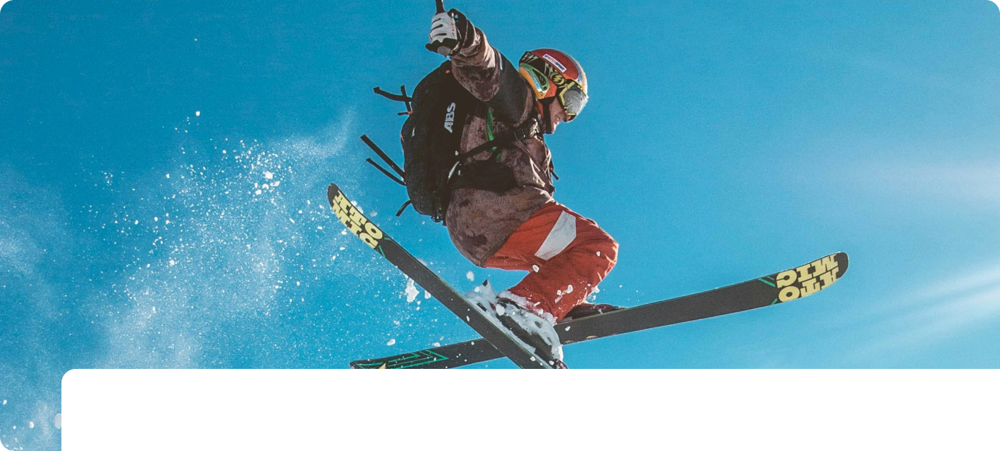
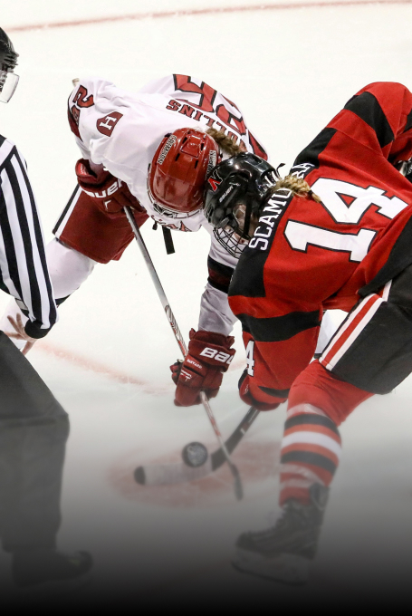
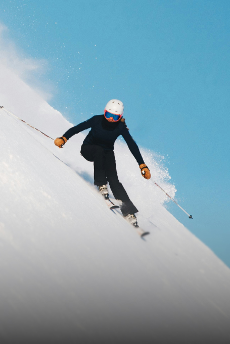

- 고효율 냉각 방식으로 최상의 스포츠 환경을 제공합니다
- 한국마이콤 냉동기 엔지니어링의 식품, 음료 사업부는 최적의 온도 관리 솔루션을 제공합니다. 원자재 입고부터 완제품 출하까지 전 공정에 정밀한 온도 제어 기술을 적용하여 식품의 품질과 안전을 보장합니다. 히트 펌프, 에어 커튼 등 첨단 열 엔지니어링 기술을 통해 에너지 효율성을 높이고, 고객사의 생산성을 향상시킵니다. 다양한 식품 가공 공정에 맞는 맞춤형 냉동 솔루션으로 식품 산업의 혁신을 선도합니다.

- 아이스 경기장
- Ice Rink
- 고효율적인 MYCOM M 시리즈 압축기는 상당한 에너지 절감에
기여합니다. 또한, 링크 냉각 액체로 염수나 글리콜 대신 액화 CO₂와 NewTon을 사용하는 냉장 시스템은 링크 전체를 균일하게 냉각하고 세계 최고의 선수들도 만족시킬 수 있는 얼음을 생산할 수 있습니다.

- 스키장
- Ski Arena
- 첨단 제빙 및 제설 기술을 통해 눈이 내리기 전부터 야외 슬로프를 최적의 상태로 준비할 수 있도록 지원합니다. 또한, 한국마이콤은 세계 최초로 인공 제설 시스템을 도입한 실내 스키 리조트 프로젝트에
참여해 업계를 선도하는 기술력을 입증했습니다.
- 친환경 온천
- Hot Spring
- 샤워, 리조트, 호텔, 피트니스 클럽, 스파 등 건강을 위한 공간에서는 대량의 뜨거운 물이 필수적입니다. 저희는 재생 에너지를 열원을
사용하는 히트 펌프 시스템을 통해 뜨거운 물을 제공합니다.
연소 에너지를 사용하지 않는 히트 펌프는 CO₂ 배출을 크게 줄이는
동시에 에너지 비용을 절감하는 친환경 솔루션을 제공합니다.